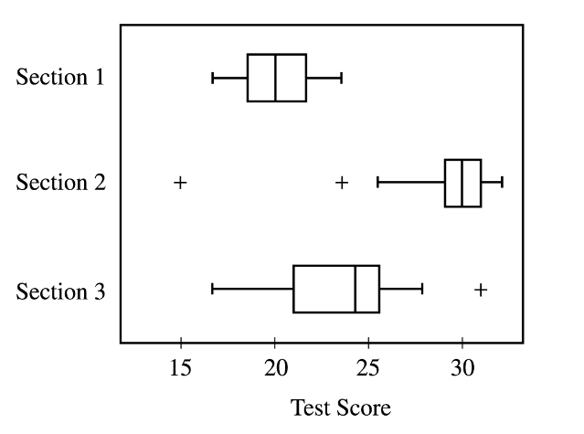

Professor James gave the same test to his three sections of statistics students. On the 35-question test, the highest score was 32 and the lowest was 15. Based on the information displayed in the boxplots above, which of the following statements is true?